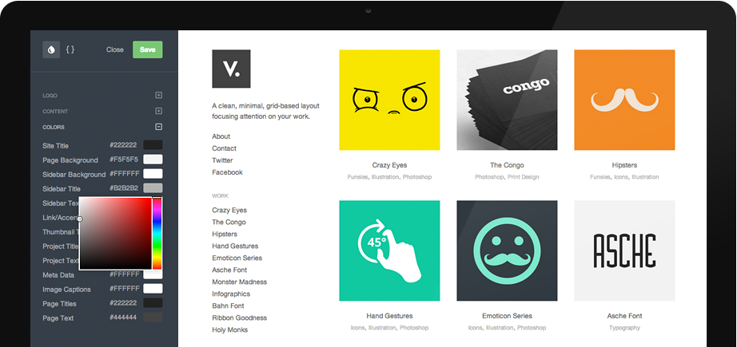
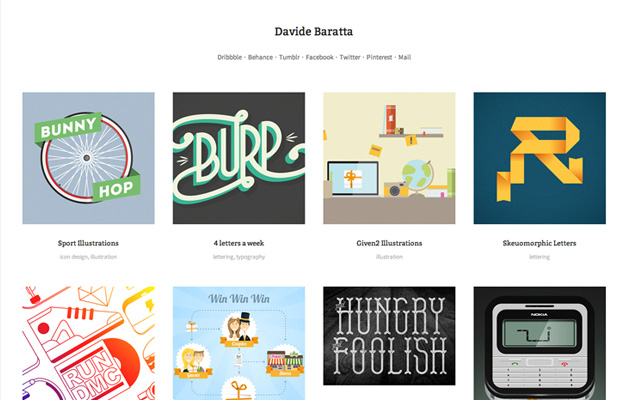
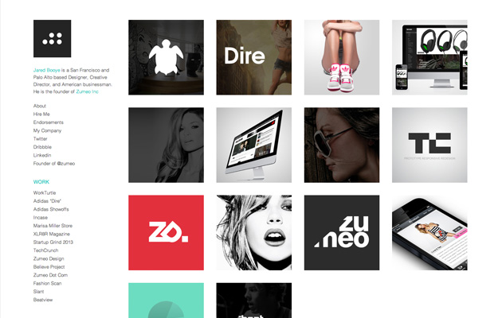
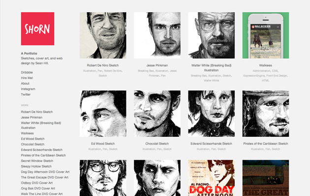
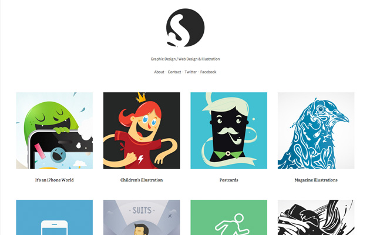
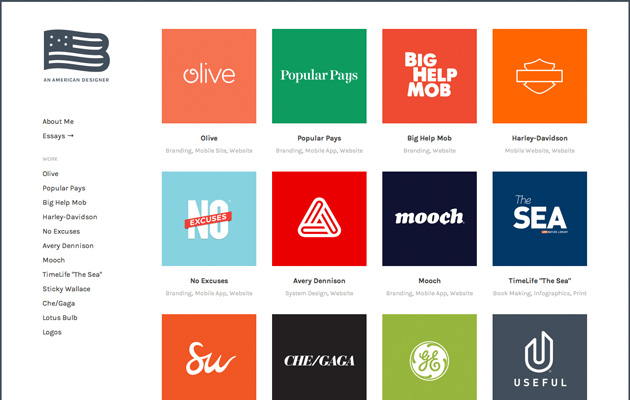
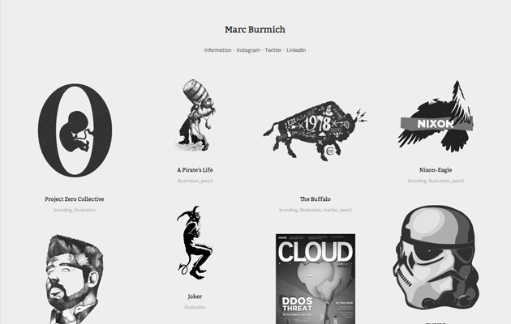
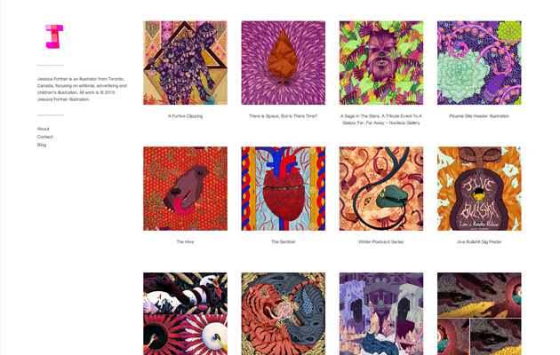

<!DOCTYPE html>
<html class="no-js">
<head>
    <meta charset="utf-8">
    <meta http-equiv="X-UA-Compatible" content="IE=edge,chrome=1">
    <title>Create A Free Online Portfolio Website | Dunked</title>
    <meta name="description" content="Dunked makes creating your online & mobile portfolio website super simple. Showcase your design, illustration, photography and other creative work on any device.">
    <meta name="viewport" content="width=device-width">
    <link rel="stylesheet" media="all" href="css/style.css">
</head>
<body class="home">
<div id="reusePosition"></div>s
<div class="header-wrap">

    <header id="site-header">
        <div class="wrap">
            <div id="logo">
                <a href="http://dunked.com"></a>
            </div>
            <nav id="header-nav" role="navigation">
                <ul>
                    <li><a class="signup" href="https://secure.dunked.com/signup" onClick="_gaq.push(['_trackEvent', 'Signup', 'Header CTA']);">Get Started</a></li>
                    <li><a href="https://dunked.com/admin/login">Log In</a></li>
                </ul>
            </nav>
        </div>
    </header>
    <div class="page-header">
        <div class="wrap">
            <h1>Create your online portfolio<br />in minutes. No coding skills required.</h1>
            <p class="page-tagline"><span class="user-count">60,399</span> creative people use Dunked to showcase their talent. Sign up today to showcase yours.</p>
            <a href="https://secure.dunked.com/signup" class="signup-btn" onClick="_gaq.push(['_trackEvent', 'Signup', 'Main CTA']);">Get Started Now</a>
        </div>
    </div>

</div>

<div class="section design" data-fade-start="60">
    <div class="wrap">
        <h2 class="section-title">Beautiful. Responsive. Retina Ready.</h2>
        <p class="section-description">Choose from a growing collection of professionally designed templates to reinvent your portfolio.<br />Our pixel-perfect templates are customizable, easy to use, and focus on one thing only - your content.</p>

        <div class="feature">
            <h3>Optimized for Retina</h3>
            <p>Your portfolio will look vibrant, detailed and sharp when viewed with any Retina (HiDPI) display or device. Dunked will automatically detect hi-resolution screens and ensure your work looks stunning.</p>
        </div>
        <div class="feature">
            <h3>Optimized for Mobile</h3>
            <p>Each template is fully responsive and will adapt itself to any mobile device. iPad, iPhone, Android, it doesn't matter. Your work will always looks its absolute best.</p>
            <p class="devices"><span class="apple">Apple</span><span class="android">Android</span><span class="windows">Windows</span></p>
        </div>
        <div class="iphone-ipad"></div>
    </div>
</div>

<div class="section customize" data-fade-start="70">
    <div class="wrap">
        <h2 class="section-title">Customize your portfolio.</h2>
        <p class="section-description">Customize your design to suit your needs and make your portfolio truly unique.<br />Preview your changes instantly without affecting your live site and publish when you're good and ready.</p>

        <div class="feature simple-editing active" data-feature="simple-editing">
            <h3>Simple Editing</h3>
            <p>Adjust layout, colors and typography using a selection of preset options. Make drastic changes without touching a line of code.</p>
        </div>
        <div class="feature advanced-editing" data-feature="advanced-editing">
            <h3>Advanced HTML/CSS Editing</h3>
            <p>Take complete control of your portfolio's HTML and stylesheet to make it your own. Perfect for all you code wranglers.</p>
        </div>

        <div class="customize-feature-images">
            <div class="customize-feature-image-1">
                
            </div>
            <div class="customize-feature-image-2">
                
            </div>
        </div>
    </div>
</div>

<div class="section features" data-fade-start="20" data-fade-end="80" data-fade-offset="0">
    <div class="wrap">
        <h2 class="section-title">Everything you need.</h2>
        <p class="section-description">We've packed in everything you need to create yourself a professional portfolio.<br />Our simple to use editor along with a growing feature set will have you publishing your work in no time.</p>

        <div class="features-wrapper">
            <div class="feature">
                <h3>Simple to Use</h3>
                <p>Dunked's drag and drop editor couldn't be easier to use. Simply upload your images, video or audio and we do the rest of the hard work for you.</p>
            </div>
            <div class="feature">
                <h3>Your Own Domain</h3>
                <p>Use your own domain name rather than your Dunked URL. Make your portfolio truly your own with no visible outside branding or advertising.</p>
            </div>
            <div class="feature last">
                <h3>Integrate Your Content</h3>
                <p>Showcase all your work in one location. Embedding content from services like Vimeo, YouTube, SoundCloud, Flickr, and 500px is built right in.</p>
            </div>
            <div class="feature">
                <h3>Google Analytics</h3>
                <p>Add Google Analytics to your portfolio to find out things like who your visitors are, when they visit and which websites send you the most traffic.</p>
            </div>
            <div class="feature">
                <h3>Password Protection</h3>
                <p>Restrict access to your website with a password. Perfect for those in need of a private portfolio or those showcasing private projects to clients.</p>
            </div>
            <div class="feature last">
                <h3>Unlimited Bandwidth</h3>
                <p>Receive an unlimited amount of traffic without penalty. No matter how popular your portfolio is, we'll never let limits get in the way of displaying it beautifully.</p>
            </div>
            <div class="feature">
                <h3>SEO Optimised</h3>
                <p>All of our templates are SEO optimised to make sure your portfolio has the best possible chance of ranking well in major search engines like Google and Bing.</p>
            </div>
            <div class="feature">
                <h3>Secure Hosting</h3>
                <p>All our portfolios are hosted on top tier dedicated servers with enterprise-grade encryption and security protecting them, and your work, from potential threats.</p>
            </div>
            <div class="feature last">
                <h3>Fast, Friendly Support</h3>
                <p>Need a bit of help? Our courteous and friendly support staff are always on hand to sort things out as soon as humanly possible. Never outsourced.</p>
            </div>
        </div>
    </div>
</div>

<div class="section favorites" data-fade-start="50" data-fade-end="80" data-fade-offset="10">
    <div class="wrap">
        <h2 class="section-title">You're in good company.</h2>
        <p class="section-description">A hand-picked selection of some of the most inspiring and creative portfolios<br />created by our members. Quite the talented bunch.</p>

        <div class="macbook">
            <div id="favorites-slider" class="favorites-slider">
                <div class="favorites-slide">
                    <!--a target="_blank" href="http://marcburmich.dunked.com/" --><!--/a-->
                    <h5>Davide Baratta</h5>
                    <p>Illustrator</p>
                </div>
                <div class="favorites-slide">
                    <!--a target="_blank" href="http://dsply.dunked.com/" --><!--/a-->
                    <h5>Jared Booye</h5>
                    <p>Creative Director</p>
                </div>
                <div class="favorites-slide">
                    <!--a target="_blank" href="http://siahdesign.dunked.com/" --><!--/a-->
                    <h5>Elina Andersson</h5>
                    <p>Designer</p>
                </div>
                <div class="favorites-slide">
                    <!--a target="_blank" href="http://816creative.dunked.com/" --><!--/a-->
                    <h5>Sean Hill</h5>
                    <p>Illustrator &amp; Designer</p>
                </div>
                <div class="favorites-slide">
                    <!--a target="_blank" href="http://hugomesdesign.dunked.com/" --><!--/a-->
                    <h5>Jan-André Granheim</h5>
                    <p>Graphic Artist</p>
                </div>
                <div class="favorites-slide">
                    <!--a target="_blank" href="http://avillanueva.dunked.com/" --><!--/a-->
                    <h5>Benjamin Kowalski</h5>
                    <p>Designer</p>
                </div>
                <div class="favorites-slide">
                    <!--a target="_blank" href="http://curtisillustration.dunked.com/" --><!--/a-->
                    <h5>Marc Burmich</h5>
                    <p>Illustrator &amp; Designer</p>
                </div>
                <div class="favorites-slide">
                    <!--a target="_blank" href="http://royalstudio.dunked.com/" --><!--/a-->
                    <h5>Jessica Fortner</h5>
                    <p>Illustrator</p>
                </div>
                <!--END #favorites-slider -->
            </div>
            <a href="#" id="prev-slide"></a>
            <a href="#" id="next-slide"></a>
        </div>
        <!--END .wrap -->
    </div>
    <!--END .section .favorites -->
</div>


<div class="section testimonials">
    <h2 class="section-title">Trusted by <span>60,399</span> creative folk</h2>
    <div class="testimonial-faces wrap">
        <div class="testimonial-faces-overlay"></div>
        <ul id="testimonial-list">
            <li data-source='Brian Benitez via Twitter'>Dunked is one of the simplest, easiest, and most versatile portfolio creation tools I’ve ever come across. Responsive, Retina &amp; Ready to go!</li><li data-source='Eric Leckband via Twitter'>Need a professional kickass looking portfolio, Dunked is the way to go! Did I mention how easy it was to use? Great product!</li><li data-source='JT via Twitter'>Dunked is a sleek, ridiculously easy to use online portfolio. More importantly, it's a huge time saver for busy creatives</li><li data-source='Marc Burmich via Twitter'>Dunked is inline with everything put out by this collective group of design gurus. Design, execution & function - 10/10!</li><li data-source='Nicolás Chacón via Twitter'>Never thought that such a simple idea would bring so much value for an artist online. That's why I do recommend it</li><li data-source='Seth Sirbaugh via Twitter'>A beautiful, easy to use interface make this web-based portfolio solution a perfect choice for any designer or firm. Kudos.</li><li data-source='Margaret Williams via Twitter'>Absolutely gorgeous! So simple yet when it's complete looks like it took days to put together! Great product!</li><li data-source='r3reative via Twitter'>Want a simple and clean way to showcase your work? Dunked is your solution</li><li data-source='Scott Ruth via Twitter'>Couldn't be happier with Dunked. Setting up my portfolio was not only easy, it was actually pretty fun. LOVE IT. Thanks guys!</li><li data-source='Strahinja Todorović via Twitter'>Project showcasing as it should be - simple and intuitive with a pinch of love for advanced users</li><li data-source='Bernardo Lemos Matos via Twitter'>I really liked Dunked! Certainly is the most beautiful online portfolio that I ever saw. Congrats!</li><li data-source='Rafael Oliveira via Twitter'>Dunked is an amazing way of showcasing your portfolio online. It is simple, beautiful and really easy to use.</li><li data-source='Jezz Dalgarno via Twitter'>Been putting off creating my portfolio for years, then I found Dunked and about 10 minutes later... I have a portfolio. Love it.</li><li data-source='Mike Pianka via Twitter'>A great, free way to showcase your work. If you're looking for something easy, uncluttered, fast and customizable dunked is it!</li><li data-source='Cristóbal Pizarro via Twitter'>Amazing, very simple to use but with great features, of all I've tried Dunked is my choice.</li><li data-source='Charles Christie via Twitter'>Using Dunked has been a dream. The user experience is super simple; the finished result is super slick!</li><li data-source='John Saddington via Twitter'>The system is really fast. I love not waiting for anything to load and the response-time for editing is like lightning.</li><li data-source='Anthony Hurlstone via Twitter'>What a product, quick editing, fantastic UI and has all the tools to let you create a beautiful portfolio with ease.</li><li data-source='Phil via Twitter'>Dunked offers a beautiful, innovative & sought after service piloted by an intelligent team.</li><li data-source='Nicholas Ederer via Twitter'>Finally, a portfolio system that's easy to manage and looks good to boot! I like where Dunked is going.</li><li data-source='Ishan Raychaudhuri via Twitter'>Dunked is a fresh approach to making a professional portfolio. It lets you focus more on your work and less on making it work.</li><li data-source='Antariano via Twitter'>What I love about it is that it focuses on the one thing it should do - a portfolio - and makes that awesome in every way.</li><li data-source='Jonathan via Twitter'>Dunked is ridiculously easy to use and is a great way to showcase your projects. It's also mobile friendly which is a huge +</li><li data-source='Jonathan Ogden via Twitter'>Dunked is the business. One of the best platforms I've seen for easily setting up a well-built portfolio site! Get on it!</li><li data-source='Nicolas Torres via Twitter'>Dunked is a really user-friendly, minimalist, good-looking kind of service you definitely want to use.</li><li data-source='Nick Hehr via Twitter'>Dunked is the easily the best way to get your design work on the web. Simple, clean, & professional.</li><li data-source='David Gauld via Twitter'>Brilliant for novices and pros, Dunked makes creating an awesome looking portfolio a completely painless task! Thanks guys :-)</li><li data-source='Bart Ebbekink via Twitter'>If you don't have the full knowledge to build your portfolio yourself. Dunked is the perfect way to get you started in an easy way</li><li data-source='Liam McCabe via Twitter'>Really impressed with @DunkedHQ. A very nice, dead simple way of building an online portfolio.</li><li data-source='Elliot Wright via Twitter'>First impressions of Dunked, seriously, seriously impressed. It's absolutely gorgeous and intuitive!</li><li data-source='Danny Amacher via Twitter'>The Dunked user interface is clean and intuitive, and it's easy to customize. I'm really happy with it so far!</li><li data-source='Well-Made via Twitter'>Dunked is the best portfolio / showcasing tool I've used so far. It's clean, easy to use and you can even customize looks or CSS!</li><li data-source='Bruno Rodrigues via Twitter'>Dunked is amazing, very simple, very practical, easy to customize and great interface! I loved it!</li><li data-source='QuinnMil via Twitter'>Love the sleek design! Simple, clean way to showcase my photographs. Super glad I signed up.</li><li data-source='Alex Hunt via Twitter'>Just loving the elegant simplicity of Dunked, and the scope for customisation is breathtaking! Now to actually add my stuff...</li><li data-source='Qais Patankar via Twitter'>I love Dunked. It's really simple and easy to use, whilst still letting us programmers mess around with the code behind it!</li><li data-source='Christian Petersen via Twitter'>I like how easy it is for designers to show their creativity in a cool way without struggling with code.</li><li data-source='DripShip via Twitter'>We are loving Dunked so far! It's amazing how well it works for business and personal uses, and all from one portfolio network!</li><li data-source='Rick Waalders via Twitter'>Now that Dunked exists, designers have no excuse anymore for not having an awesome portfolio.</li><li data-source='Emanuel Gomes via Twitter'>It's a great app, very easy to use, clean and beautiful, we can build a great portfolio without any difficulty</li><li data-source='Stuart L Crawford via Twitter'>Easiest way to make a beautiful portfolio site, with no coding necessary (perfect for me!)</li><li data-source='Rambunctious Palaver via Twitter'>Love it! A really simple way to effectively and smoothly showcase my Portfolio without needing much time on the nitty gritty stuff</li><li data-source='J. Maybury via Twitter'>I liked using Dunked. Slick and pretty! At least the showcase'll look good even if my work doesn't.</li><li data-source='Marek Blomkvist via Twitter'>I searched a place for my portfolio and then I found Dunked. Since the first moment I loved it and you will too.</li><li data-source='Aziz Firat via Twitter'>I was trying to put my portfolio online but didn't really have the time, finally there is an easy service that can help me! Thanks!</li>				</ul>
    </div>
    <blockquote id="testimonial"><p>Dunked is one of the simplest, easiest, and most versatile portfolio creation tools I’ve ever come across. Responsive, Retina & Ready to go!</p><footer>Brian Benitez via Twitter</footer></blockquote>
</div>

<div class="section click-the-button-aye">
    <div class="wrap">
        <h2 class="section-title">Start building your portfolio now.<br />Try Dunked <strong>free</strong> for 10 days.</h2>
        <a href="https://secure.dunked.com/signup" class="signup-btn" onClick="_gaq.push(['_trackEvent', 'Signup', 'Footer CTA']);">Get Started Now</a>
    </div>
</div>

<footer id="site-footer">
    <div class="wrap">
        <nav id="footer-nav" role="navigation">
            <ul>
                <li><a href="/about">About</a></li>
                <li><a href="/pricing">Pricing</a></li>
                <li><a href="/blog">Blog</a></li>
                <li><a href="http://help.dunked.com">Help</a></li>
                <li><a href="http://help.dunked.com/customer/portal/emails/new/">Contact</a></li>
                <li><a href="/privacy">Privacy</a></li>
                <li><a href="/terms">Terms</a></li>
                <li><a href="http://twitter.com/dunkedhq">Twitter</a></li>
                <li><a href="http://www.facebook.com/DunkedHQ">Facebook</a></li>
            </ul>
        </nav>
        <p class="copyright">&copy; 2013 ZillaMedia. All Rights Reserved</p>
        <p class="made-by-gentlemen">Made By Gentlemen</p>
    </div>
</footer>

<script src="js/jQuery-src.js"></script>
<script src="js/jquery.utils.js"></script>
<script src="js/lib.min.js"></script>
</body>
</html>